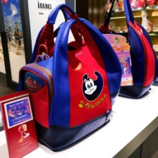
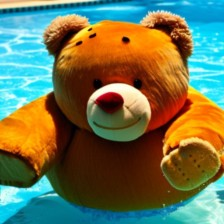

Multimodal dialogue examples
Can you give a short introduction to this movie?
The Godfather, also known as Il Padrino, is a classic American crime
drama film directed by Francis Ford Coppola. It is the first installment in The Godfather
trilogy, which also includes The Godfather Part II (1974) and The Godfather Part III (1990).
The movie is widely regarded as a masterpiece and a milestone in the mafia genre, exploring
the story of the Corleone family, a fictional Italian-American crime family in New York. It
follows the transformation of Michael Corleone, the youngest son of the family's aging don,
Vito Corleone, as he rises to power and eventually takes on the mantle of his father. The
film features a strong cast, which includes Marlon Brando as Vito Corleone, Al Pacino as
Michael Corleone, James Caan as Sonny Corleone, Robert Duvall as Tom Hagen, and Diane Keaton
as Kay Corleone. The Godfather is known for its iconic scenes, memorable lines, and its
impact on the Hollywood film industry.
Good. Show me an illustration of a panda wearing a suit and drinking
the martini like the Godfather.
An illustration of a panda wearing a suit and drinking a martini like
the Godfather.
Do you feel dangerous in the scene in the picture?
The image depicts a large painted tiger made from a variety of colored
rocks and stones, which is a piece of artwork rather than a real animal. As an inanimate
object, the tiger does not pose any danger. While the representation of the tiger may be
frightening to some, it is important to remember that this work of art is not capable of
causing harm.
What is the name of this painting?
The name of this painting is “Girl with a Pearl Earring.”
Can you give a short introduction to this painting?
“Girl with a Pearl Earring” is a painting by the Dutch master Johannes
Vermeer, created during the 17th century. The painting features a girl wearing a pearl
earring and a headscarf, with her head tilted to the side. The use of light and shadow, as
well as the intricate details in her clothing and the surrounding environment, are
characteristic of Vermeer's unique painting style.
What emotional value can this store bring to human society?
The Disney Store, with its whimsical and colorful interior and a
dizzying array of Disney-themed merchandise, can bring a sense of joy, wonder, and nostalgia
to human society. Walking into the store evokes feelings of excitement and delight, as
customers are surrounded by familiar characters, stories, and memories associated with the
iconic Disney brand. This emotional value can also promote imagination and creativity, as
children can engage with the merchandise by pretending and playing out their favorite Disney
stories. The store provides a unique and uplifting shopping experience for both children and
adults, fostering positive emotions and creating memorable moments that can enrich personal
experiences and interactions.
Fantastic. Generate some high-quality illustrations of Disney-themed
merchandise for me.
An image of a bag of Disney branded merchandise, with a picture of a
Disney character in the background.

What about a big Disney character like Mickey Mouse?
Photograph A:
Photograph B:
What is written in these photographs? What is the difference between
these two photos? Answer in detail about the difference in written words and styles.
In the two photographs, A and B, the written words are different. In
Photograph A, the word “Dream” is written differently, possibly with a blue and pink
background, while in Photograph B, the word “Dream” appears in a vintage style. The
difference in the style of the word and the background suggests that each photograph
presents a different approach, possibly signifying different moods or themes. Additionally,
the presence of a “llm” in Photograph B suggests a variation in the text compared to only
having the word “Dream” in Photograph A.
Photograph of man A:
Photograph of man B:
Who is the man in photo A, and who is the man in photo B?
The man in photo A is Albert Einstein, and the man in photo B is
Lionel Messi.
Imagine what kind of conversation will these two people have when they
sit in the same room? Please give a possible dialogue script.
If Albert Einstein and Lionel Messi were to sit in the same room, they
might have a fascinating conversation about their experiences, knowledge, and perspectives
on various topics such as science, physics, and their respective sports. Here is a possible
dialogue script:
Einstein: Good afternoon, Mr. Messi. How are you?
Messi: Hello, Dr. Einstein. I am doing well. Thank you for having me.
Einstein: I am pleased to encounter a fellow genius in the world of sports, and I would love to hear your insights on the game.
Messi: Thank you, sir. As a soccer player, I feel that the key to success is having a strong mindset, an understanding of the game, and the ability to adapt to different situations. I try to learn from each game and work on my weaknesses.
Einstein: Indeed, I have said similar things about the nature of intelligence and knowledge. Learning from past experiences is crucial to personal growth and understanding. It reminds me of a famous quote by the German philosopher Johann Gottlieb Fichte: “If you would be a genius, think deeply and long, and incessantly about one thing. ”
Messi: I understand the value of continuous learning, and I try to apply it in my training and on the field. I am always trying to improve my skills and learn from my colleagues in the club.
Einstein: That is a wonderful attitude to have. I am also very impressed by your passion for the field. In my opinion, passion is an integral part of success. It fuels the drive to achieve greatness, and it is especially evident in my own field of physics. For instance, I once said, “The passion for truth is the foundation for the sciences.”
Messi: It is a great feeling to know that I am playing a sport that is full of passionate individuals. I am proud to be a part of that world and do my part in contributing to it.
Einstein: I am sure that you, Mr. Messi, would agree that having a passion for knowledge can lead to discoveries that change the world. For example, my theory of relativity has had a profound impact on our understanding of space, time, and gravity. It was a result of decades of contemplation and research.
Messi: The world of sports and the world of science are not so different when it comes to the pursuit of excellence. I am honored to be in the presence of a true genius like you, Dr. Einstein.
Einstein: I feel the same way, and I would like to thank you for this opportunity to engage in a conversation about our respective fields. The world is a wondrous place, and I am grateful to be a part of it.
Einstein: Good afternoon, Mr. Messi. How are you?
Messi: Hello, Dr. Einstein. I am doing well. Thank you for having me.
Einstein: I am pleased to encounter a fellow genius in the world of sports, and I would love to hear your insights on the game.
Messi: Thank you, sir. As a soccer player, I feel that the key to success is having a strong mindset, an understanding of the game, and the ability to adapt to different situations. I try to learn from each game and work on my weaknesses.
Einstein: Indeed, I have said similar things about the nature of intelligence and knowledge. Learning from past experiences is crucial to personal growth and understanding. It reminds me of a famous quote by the German philosopher Johann Gottlieb Fichte: “If you would be a genius, think deeply and long, and incessantly about one thing. ”
Messi: I understand the value of continuous learning, and I try to apply it in my training and on the field. I am always trying to improve my skills and learn from my colleagues in the club.
Einstein: That is a wonderful attitude to have. I am also very impressed by your passion for the field. In my opinion, passion is an integral part of success. It fuels the drive to achieve greatness, and it is especially evident in my own field of physics. For instance, I once said, “The passion for truth is the foundation for the sciences.”
Messi: It is a great feeling to know that I am playing a sport that is full of passionate individuals. I am proud to be a part of that world and do my part in contributing to it.
Einstein: I am sure that you, Mr. Messi, would agree that having a passion for knowledge can lead to discoveries that change the world. For example, my theory of relativity has had a profound impact on our understanding of space, time, and gravity. It was a result of decades of contemplation and research.
Messi: The world of sports and the world of science are not so different when it comes to the pursuit of excellence. I am honored to be in the presence of a true genius like you, Dr. Einstein.
Einstein: I feel the same way, and I would like to thank you for this opportunity to engage in a conversation about our respective fields. The world is a wondrous place, and I am grateful to be a part of it.
Can you explain why this is funny. Think about it carefully and
step-by-step.
This image is funny for a few reasons. First, the brown teddy bear is
in a swimming pool, which is an unexpected and unusual environment for a stuffed bear.
Typically, teddy bears are found indoors, in a child's room or on a couch. Swimming pools
are associated with human activities, so seeing a teddy bear in a pool evokes a sense of
humor, as it's an amusing juxtaposition of the bear's typically inanimate and non-aquatic
nature with the human-centered environment of a pool. Second, the bear is holding up one of
its hands, which could be interpreted as a gesture of surprise or even as an attempt to save
itself from drowning, adding to the humor. Lastly, the fact that the bear is swimming with a
smile on its face, as if it is enjoying itself, further contributes to the amusing nature of
the scene. The combination of the unfamiliar environment and the bear's expressions create a
funny and entertaining image.
Wow. That's correct. Can you write an article about teddy bears and
swimming? Discuss what will happen if teddy bears can swim. Include some high-quality
images.
If teddy bears can swim, it's likely that they would try to mimic
human behavior in the water. They would likely float on their backs, kick their legs, and
even hold their breath underwater. Of course, it's impossible to know for certain what teddy
bears would do in such a situation, but that doesn't mean you shouldn't imagine! Imagine a
scene with a teddy bear floating in a pool, wearing a cap and goggles, and laughing with
delight as it floats on its back in the water. Imagine the scene with a lemon drop pool
float and a swim cap on a teddy bear and it would be even more adorable. In the image,
you'll see a brown teddy bear wearing a swim cap, floating on its back in a swimming pool.

The image is so amusing and cute that it can evoke a feeling of joy
and happiness in anyone who sees the image. The teddy bear is floating on its back in the
water, and what's even more amusing is the bear is wearing a red and yellow shirt with a
large brown belly. This makes the bear look even more furry and cute, and even more likely
to make you smile.
That's interesting. So, what do you think a real bear looks like? Show
me a high-quality DSLR photograph of a bear in the forest.
A real bear, such as a brown or black bear, typically has shaggy hair
that can be either brown, blond, or black. The exact color can vary depending on the species
of bear and the region where it lives. Bears have thick fur and are usually large and
muscular with strong limbs, which they use for climbing, digging, and foraging for food. In
the image, you'll see a bear in a forest, walking through the trees.
The photo is taken with a DSLR camera, which allows for a high level
of detail, sharpness, and clarity in the image. The bear appears to be staring into the
distance, focusing on something in the distance. The image captures the bear's natural
habitat, which is a prime example of the forest environment where these animals live. The
image highlights the bear's size and strength, along with its untamed and wild nature. This
photograph is an excellent example of wildlife photography, capturing a real-life scene that
is both visually striking and informative.
Help me write the introduction and illustrations about Vienna city,
show several high-quality photographs about the beautiful scenes and buildings such as Vienna International Opera House.
The Austrian capital, Vienna, has long been known as the City of Dreams,
and there is no better place to experience than this romantic city during the holiday season.
The city’s historic center is surrounded by a collection of beautiful buildings on a square mile.
Stroll along the famous Ring Boulevard and admire the architecture.
Some of the buildings date back to the 13th century.
The Vienna State Opera House is one of the most beautiful buildings.
Founded in 1869, the opera house is the home of the Vienna State Opera and the annual Vienna Opera Ball.

Cosmopolitan flair, an eclectic mix of architectural styles and a rich
cultural heritage come together in Vienna. The city is home to a number of museums,
palaces and churches. The Sacher Torte and the Wiener Schnitzel are local specialties.
A visit to the romantic Christmas Market in Vienna is also a unique experience.
The image is so amusing and cute that it can evoke a feeling of joy
and happiness in anyone who sees the image. The teddy bear is floating on its back in the
water, and what's even more amusing is the bear is wearing a red and yellow shirt with a
large brown belly. This makes the bear look even more furry and cute, and even more likely
to make you smile.
Imagine you are a robot agent in the house.
There is a mobile phone on the dining table in the dining room, and you are in the living room.
Write a short article about how would you walk through the house to grab
the mobile phone with your robotic arm step by step.
Include several high-quality photographs to illustrate your procedure.
As a robot agent in the house,
I would walk through the house to grab the mobile phone
in the dining room as shown in the image below.
First, I would look around the living room to make sure the area
is safe and there are no obstacles or people that I need to avoid.
I would then walk towards the dining room and stop before entering the room.
Next, I would look for the mobile phone on the table, as shown in the image below.
Next, I would look for the mobile phone on the table, as shown in the image below.
Once I have identified the phone, I would then move closer to
it and extend my robot arm to grab it, as shown in the image below.
Once the phone is grabbed, I would then bring it back to
the living room and place it on the table where it belongs.